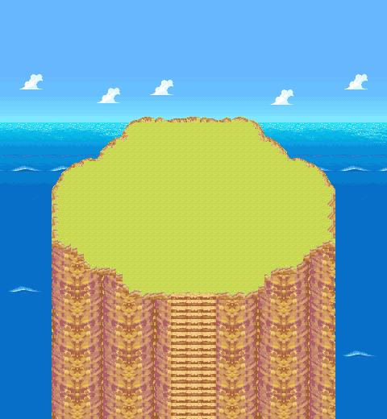
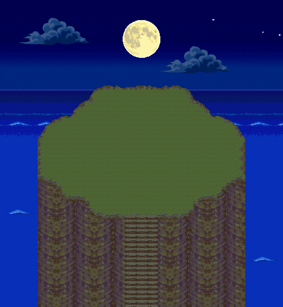

Falaise de la guilde
Des bordures qui suivent le relief
La lisière Métano se prolonge sur les côtés ; le raccord avant est ajusté à la courbe du plateau, sans déplacer l’escalier.
Jour · bordures corrigéesAnimation hors moteur

Jour et nuit, côte à côte
Ces deux vues restent visibles même sans utiliser les boutons. Si une animation ne s’affiche pas, ouvre l’image fixe correspondante.
Jour


Nuit



Les trois ambiances sont des recompositions animées hors moteur. Jour : ciel de la guilde reconstruit ; crépuscule : deux fonds EoS assemblés ; nuit : ciel de la zone Réveil. Les nuages bouclent en wrap. Sources, tests et limites.